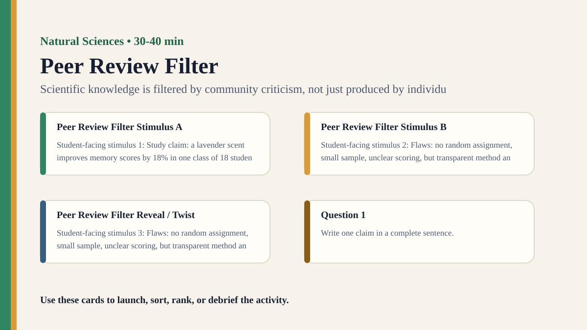

Premium draft resource
Peer Review Filter Classroom Run Kit
Students act as reviewers for a fictional study and decide whether flaws require revision, rejection, or cautious acceptance.
One-Minute Teacher Brief
Students act as reviewers for a fictional study and decide whether flaws require revision, rejection, or cautious acceptance.
Big idea: Scientific knowledge is filtered by community criticism, not just produced by individual discovery.
Student Prompt
Inspect Peer Review Filter Stimulus A. Record one first claim, the evidence you used, your confidence, and what would make you revise.
Concrete Stimulus Packet
Stimulus
Peer Review Filter Stimulus A
Student-facing stimulus 1: Study claim: a lavender scent improves memory scores by 18% in one class of 18 students. Identify the observation, variable, control, anomaly, or missing method detail before making a claim.
Students inspect this exact card first and commit to a claim before hearing anyone else.Stimulus
Peer Review Filter Stimulus B
Student-facing stimulus 2: Flaws: no random assignment, small sample, unclear scoring, but transparent method and plausible follow-up. Identify the observation, variable, control, anomaly, or missing method detail before making a claim.
Use this for comparison, a second round, or a partner challenge.Stimulus
Peer Review Filter Reveal / Twist
Student-facing stimulus 3: Flaws: no random assignment, small sample, unclear scoring, but transparent method and plausible follow-up. Identify the observation, variable, control, anomaly, or missing method detail before making a claim.
Teacher reveal: connect the changed response to the big idea — Scientific knowledge is filtered by community criticism, not just produced by individual discovery.Actual Lesson Questions
| # | Question for students | Teacher key / cue |
|---|---|---|
| 1 | After inspecting Peer Review Filter Stimulus A, what is your first knowledge claim? | Teacher cue: look for a clear claim, not just a description. |
| 2 | Which exact detail from Peer Review Filter Stimulus A did you use as evidence? | Teacher cue: students should name visible words, data, source features, method features, or contextual clues. |
| 3 | What did you infer beyond the evidence? | Teacher cue: this is where assumptions, framing, models, or perspective usually appear. |
| 4 | How confident are you: 50%, 60%, 70%, 80%, 90%, or 100%? | Teacher cue: confidence is data for the debrief, not a grade. |
| 5 | What missing information would most improve the knowledge claim? | Teacher cue: push for method, source, context, comparison, or definitions. |
| 6 | How does criticism strengthen knowledge? | Teacher cue: students should move from the classroom example to a general TOK issue. |
Student Task
Use the stimulus cards to complete the observation/inference/evidence/confidence grid, then answer one TOK knowledge question connected to Natural Sciences.
Teacher Key / Reveal
The key move is not the “right answer”; it is the moment students see how scientific knowledge is filtered by community criticism, not just produced by individual discovery.
- Strong response: separates observation from inference.
- Strong response: names a method, source, model, language choice, context, or perspective.
- Strong response: revises confidence when new evidence or a new criterion appears.
- Weak response: gives only opinion or says “it depends” without criteria.
Classroom materials
Printable Pack and Cards
Open the classroom resource pack for stimulus cards, CSV card deck, and the activity visual prompt.
Visual Prompt

Setup Checklist
- Write the fictional study so it has strengths as well as flaws.
- Give reviewers different priorities to simulate real disagreement.
Ready-to-Use Examples
- Study claim: a lavender scent improves memory scores by 18% in one class of 18 students.
- Flaws: no random assignment, small sample, unclear scoring, but transparent method and plausible follow-up.
Run Resources
- Reviewer checklist: sample, control, measurement, claim size, alternative explanation, ethical issue.
- Decision card: accept, minor revision, major revision, reject, or invite replication.
Teacher Language
- Peer review is not a truth machine; it is organized criticism.
- Which flaw changes the conclusion, and which flaw can be repaired?
Sample Student Output
- We recommended major revision because the claim was larger than the method justified.
- The study was interesting but not yet reliable enough for a strong headline.
Procedure
- Give groups a fictional study with several strengths and weaknesses.
- Students annotate method, sample, measurement, claim size, and limitations.
- Groups write reviewer comments and a decision: accept, revise, or reject.
- Compare reviewer decisions and identify criteria behind disagreement.
- Debrief peer review as a social process for improving knowledge.
Debrief Questions
- Knowledge question: How does criticism strengthen knowledge?
- Does peer review guarantee truth or reduce risk?
- What should a scientific community do with promising but flawed evidence?
Adaptations
- Support: provide three marked flaws.
- Challenge: include conflicting reviewer recommendations and require an editor decision.
Extension Tasks
- Students rewrite the study conclusion to match the evidence more responsibly.
- Compare peer review with fact-checking, editing, or legal cross-examination.